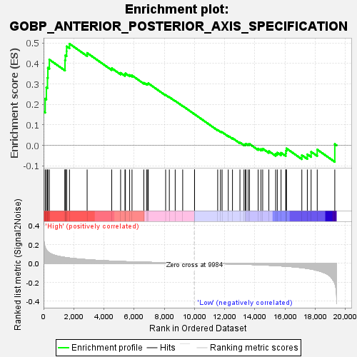
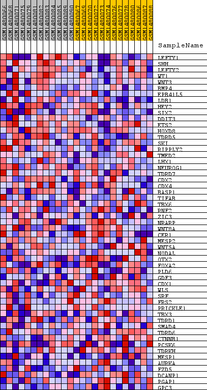
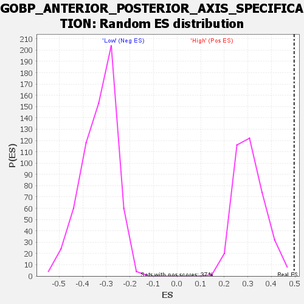

| Dataset | WG6v3.CPT1A.cls#High_versus_Low.CPT1A.cls#High_versus_Low_repos |
| Phenotype | CPT1A.cls#High_versus_Low_repos |
| Upregulated in class | High |
| GeneSet | GOBP_ANTERIOR_POSTERIOR_AXIS_SPECIFICATION |
| Enrichment Score (ES) | 0.49624902 |
| Normalized Enrichment Score (NES) | 1.6075392 |
| Nominal p-value | 0.0 |
| FDR q-value | 1.0 |
| FWER p-Value | 1.0 |

| SYMBOL | TITLE | RANK IN GENE LIST | RANK METRIC SCORE | RUNNING ES | CORE ENRICHMENT | |
|---|---|---|---|---|---|---|
| 1 | LEFTY1 | LEFTY1 | 0 | 0.399 | 0.1650 | Yes |
| 2 | SHH | SHH | 108 | 0.166 | 0.2283 | Yes |
| 3 | LEFTY2 | LEFTY2 | 187 | 0.141 | 0.2825 | Yes |
| 4 | WT1 | WT1 | 260 | 0.124 | 0.3302 | Yes |
| 5 | WNT3 | WNT3 | 286 | 0.121 | 0.3789 | Yes |
| 6 | BMP4 | BMP4 | 383 | 0.109 | 0.4189 | Yes |
| 7 | EPB41L5 | EPB41L5 | 1421 | 0.061 | 0.3905 | Yes |
| 8 | LDB1 | LDB1 | 1422 | 0.061 | 0.4157 | Yes |
| 9 | HEY2 | HEY2 | 1443 | 0.060 | 0.4396 | Yes |
| 10 | SIX2 | SIX2 | 1527 | 0.059 | 0.4595 | Yes |
| 11 | DDIT3 | DDIT3 | 1530 | 0.058 | 0.4835 | Yes |
| 12 | ETS2 | ETS2 | 1719 | 0.054 | 0.4962 | Yes |
| 13 | HOXD8 | HOXD8 | 2888 | 0.038 | 0.4514 | No |
| 14 | TDRD5 | TDRD5 | 4518 | 0.023 | 0.3767 | No |
| 15 | SKI | SKI | 5107 | 0.019 | 0.3541 | No |
| 16 | RIPPLY2 | RIPPLY2 | 5395 | 0.017 | 0.3462 | No |
| 17 | TMED2 | TMED2 | 5427 | 0.017 | 0.3516 | No |
| 18 | LHX1 | LHX1 | 5704 | 0.015 | 0.3436 | No |
| 19 | NEUROG1 | NEUROG1 | 5862 | 0.014 | 0.3415 | No |
| 20 | TDRD7 | TDRD7 | 6644 | 0.011 | 0.3057 | No |
| 21 | CDX2 | CDX2 | 6827 | 0.010 | 0.3006 | No |
| 22 | CDX4 | CDX4 | 6906 | 0.010 | 0.3007 | No |
| 23 | BASP1 | BASP1 | 6940 | 0.010 | 0.3031 | No |
| 24 | TIFAB | TIFAB | 8091 | 0.006 | 0.2461 | No |
| 25 | TBX6 | TBX6 | 8335 | 0.005 | 0.2357 | No |
| 26 | RNF2 | RNF2 | 8724 | 0.004 | 0.2172 | No |
| 27 | ZIC3 | ZIC3 | 9221 | 0.002 | 0.1925 | No |
| 28 | NRARP | NRARP | 10004 | -0.000 | 0.1522 | No |
| 29 | WNT8A | WNT8A | 10008 | -0.000 | 0.1521 | No |
| 30 | CER1 | CER1 | 11540 | -0.005 | 0.0750 | No |
| 31 | MESP2 | MESP2 | 11725 | -0.005 | 0.0677 | No |
| 32 | WNT5A | WNT5A | 11831 | -0.006 | 0.0647 | No |
| 33 | NODAL | NODAL | 12240 | -0.007 | 0.0466 | No |
| 34 | OTX2 | OTX2 | 12520 | -0.008 | 0.0355 | No |
| 35 | FOXA2 | FOXA2 | 13014 | -0.010 | 0.0142 | No |
| 36 | PLD6 | PLD6 | 13284 | -0.011 | 0.0050 | No |
| 37 | GDF3 | GDF3 | 13380 | -0.012 | 0.0050 | No |
| 38 | CDX1 | CDX1 | 13414 | -0.012 | 0.0083 | No |
| 39 | WLS | WLS | 13557 | -0.013 | 0.0062 | No |
| 40 | SRF | SRF | 13649 | -0.013 | 0.0070 | No |
| 41 | FRS2 | FRS2 | 14222 | -0.017 | -0.0157 | No |
| 42 | PRICKLE1 | PRICKLE1 | 14408 | -0.018 | -0.0179 | No |
| 43 | TBX3 | TBX3 | 14522 | -0.019 | -0.0161 | No |
| 44 | TDRD1 | TDRD1 | 14930 | -0.022 | -0.0282 | No |
| 45 | SMAD4 | SMAD4 | 15381 | -0.026 | -0.0408 | No |
| 46 | TDRD6 | TDRD6 | 15490 | -0.027 | -0.0354 | No |
| 47 | CTNNB1 | CTNNB1 | 15739 | -0.029 | -0.0363 | No |
| 48 | PCSK6 | PCSK6 | 16050 | -0.032 | -0.0391 | No |
| 49 | TDRKH | TDRKH | 16064 | -0.032 | -0.0265 | No |
| 50 | MESP1 | MESP1 | 16099 | -0.032 | -0.0149 | No |
| 51 | AURKA | AURKA | 17116 | -0.047 | -0.0478 | No |
| 52 | FZD5 | FZD5 | 17480 | -0.055 | -0.0437 | No |
| 53 | DCANP1 | DCANP1 | 17731 | -0.062 | -0.0311 | No |
| 54 | PGAP1 | PGAP1 | 18136 | -0.076 | -0.0205 | No |
| 55 | GPC3 | GPC3 | 19300 | -0.210 | 0.0063 | No |

